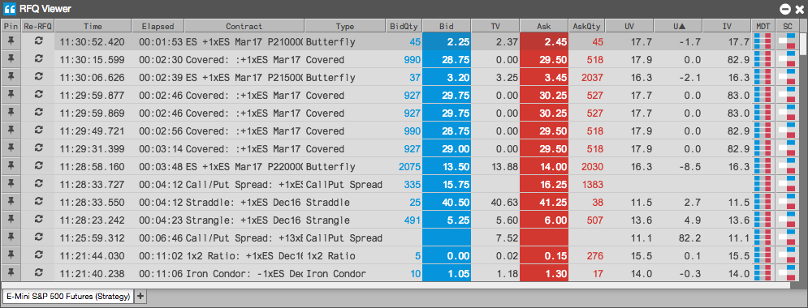

The RFQ Viewer provides you with the ability to monitor and act upon an RFQ (request for quote) for an instrument. The widget receives RFQs for instruments from all market participants and broadcasts them to users in your company. You can submit orders or resend the RFQs for these instruments directly from the RFQ Viewer. In addition, you can easily open Strategy Creation directly from the viewer to create or report your own strategies. All RFQ messages received from the market are displayed and archived in the Audit Trail.

To open the RFQ Viewer:
TT supports the native RFQ functionality provided by the following exchanges: